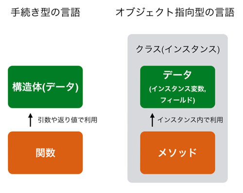

前の章にて構造体は内部にデータ(フィールド)だけを持ち、クラスはデータ(インスタンス変数)に加えて処理(メソッド)も内部に持っているとお伝えしました。 そして構造体やクラスを使うには、 まず「定義」をしてからそれを「インスタンス化」するという流れでした。 クラスはどのようなデータを持つかという定義に加えて、内部にそれらのデータを操作するための特殊な関数である「メソッド」を定義することができます。 本章ではそのメソッドについてとりあつかいます。
一般的に構造体のデータを扱うにはその構造体を使う関数を定義します。その関数を使って構造体のデータを読んだり、変更したりします。 一方、クラスを使う場合はインスタンスが持つデータへのアクセスにはメソッドを利用します。 両者の違いを以下に記します。

クラスで定義されたメソッドは文法レベルではどのように使っても構いません。 例えば会員情報を扱うクラスで円周率を求めるメソッドを書くこともできます。 ただ、基本的にはそのインスタンスが持つデータを操作するような処理に使うという、 オブジェクト指向プログラミングのルールがあるためそのようなことはしません。
メソッドの大枠を分かって頂けたかと思いますので、サンプルコードを使ってメソッドの使い方の説明をします。 生徒の国数英の点数を扱うクラスを作成します。インスタンス変数として名前と各教科の点数をもたせています。 そして 平均点を得るメソッドが実装されています。
class Score: def __init__(self): self.name = 'Unknown' self.math = 0 self.english = 0 self.japanese = 0 def get_average(self): return (self.math + self.english + self.japanese)/3
注目して欲しいのは、
def get_average(self)
という関数のようなものが「クラス内」に定義されていることです。
インデントの数からこれがクラス内にあることがわかります。
このクラスの中に定義された関数のようなものがメソッドとなります。
メソッドの定義の中身をみると、
def __init__
の中で定義された
math
、
english
といったデータを利用して、
その平均値を求めていることがわかります。
クラスの定義ができたので、実際にこのクラスをインスタンス化して利用してみます。 まず クラスからインスタンスを作成し、そのインスタンスが持つインスタンス変数に値を設定しています。 ここまでは前章と同じです。
taro = Score() taro.name = 'taro' taro.math = 60 taro.english = 70 taro.japanese = 80
そしてこのインスタンスtaroの
get_average
メソッドを呼び出します。
ave = taro.get_average() print(ave) # 70 <- (60 + 70 + 80) / 3
見てもらうとわかるように「インスタンス名.メソッド名()」としてメソッドを呼び出しています。
メソッドの呼び出し方はインスタンス変数へのアクセスとほとんど同じです。
なお、メソッドの定義は「def get_average(self):」というように引数をひとつ受け取るようにされていますが、
呼び出す際には
taro.get_average()
というように定義された selfに相当する引数を与えていません。
self については後ほど詳細を扱います。
メソッドの宣言と使い方ですが、実はほとんど通常の関数と同じです。 違うところは以下あたりになります。
引数を複数持てることや、返り値を定義できる点においてメソッドは関数と同じです。
引数や返り値を使ったサンプルコードを以下に記載します。
インスタンス変数を今回は使わないので
__init__
を定義していません。
class TestClass: def print0(self): print('0:') def print1(self, a, b): print('1: {} {}'.format(a,b)) def get100(self): return 100 instance = TestClass() instance.print0() # 0: instance.print1('A', 'B') # 1: A B a = instance.get100() print(a) # 100
クラスで定義された第一引数のselfがちょうど無視されているような形で呼び出しと定義がマッチしていることがわかります。 この self の存在を忘れることで、最初はメソッドの引数を間違えることが多いと思うので注意してください。